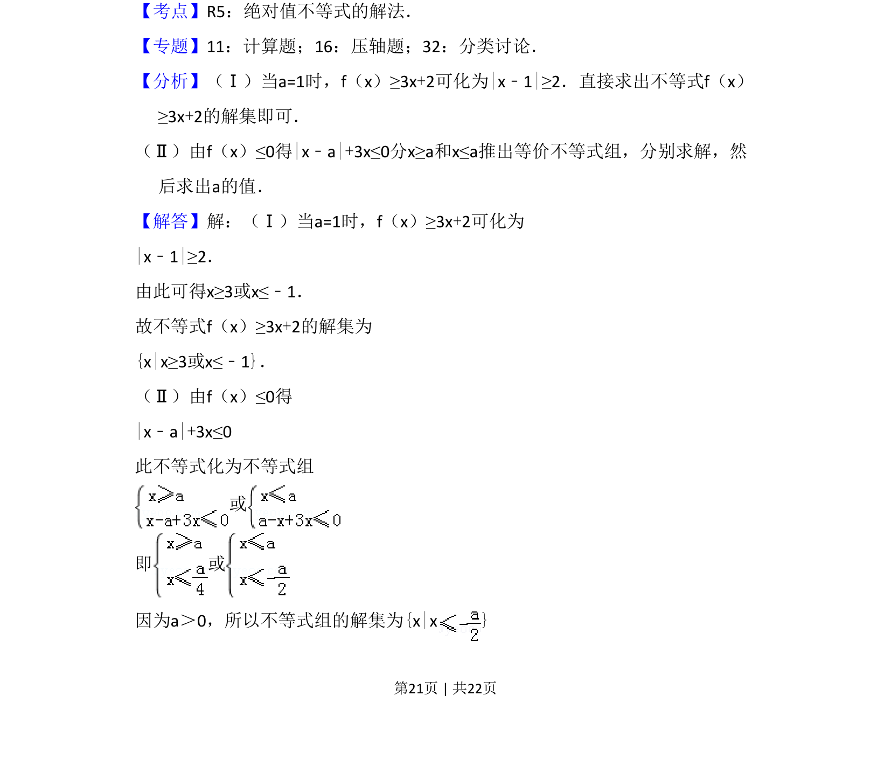
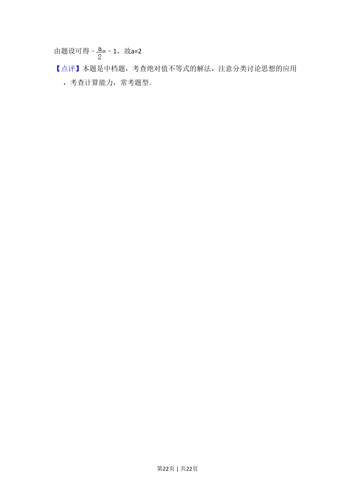

考点：绝对值不等式 分类讨论 参数取值范围
设f(x)=|x-a|+3x（a>0），分当a=1时求不等式f(x)≥3x+2解集，及由解集反求参数a。


📄 原 PDF 第 21 页：
素材/真题/吉林/2008-2024·（吉林）数学高考真题/2011年高考数学试卷（文）（新课标）（解析卷）.pdf
24．设函数f（x）=|x﹣a|+3x，其中a＞0． （Ⅰ）当a=1时，求不等式f（x）≥3x+2的解集 （Ⅱ）若不等式f（x）≤0的解集为{x|x≤﹣1}，求a的值．
【考点】R5：绝对值不等式的解法．菁优网版权所有 【专题】11：计算题；16：压轴题；32：分类讨论． 【分析】（Ⅰ）当a=1时，f（x）≥3x+2可化为|x﹣1|≥2．直接求出不等式f（x） ≥3x+2的解集即可． （Ⅱ）由f（x）≤0得|x﹣a|+3x≤0分x≥a和x≤a推出等价不等式组，分别求解，然 后求出a的值． 【解答】解：（Ⅰ）当a=1时，f（x）≥3x+2可化为 |x﹣1|≥2． 由此可得x≥3或x≤﹣1． 故不等式f（x）≥3x+2的解集为 {x|x≥3或x≤﹣1}． （Ⅱ）由f（x）≤0得 |x﹣a|+3x≤0 此不等式化为不等式组 或 即 或 因为a＞0，所以不等式组的解集为{x|x}